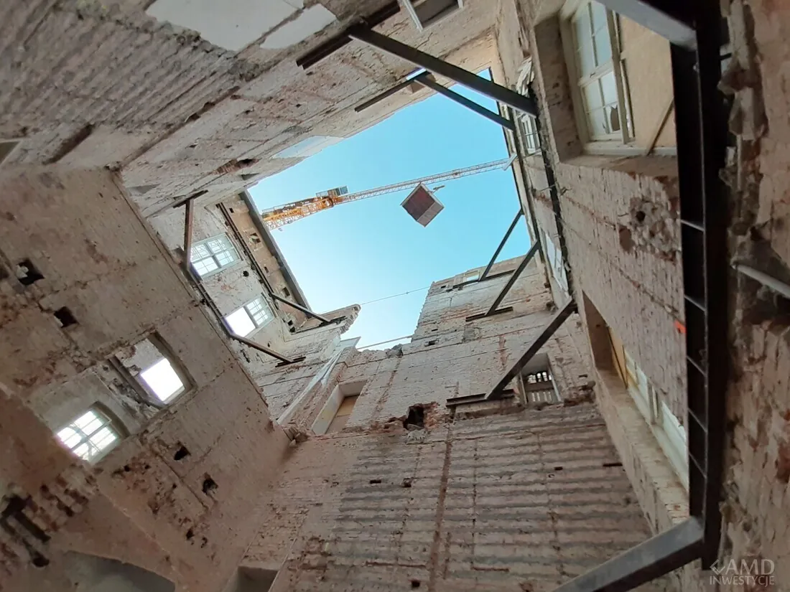

Wrocław i Dolny Śląsk
Przebudowy kamienic i rozbiórki specjalistyczne we Wrocławiu
Wymieniamy stropy, wstawiamy podciągi, wzmacniamy mury i rozbieramy tam, gdzie nie wjedzie koparka. Stary budynek zostaje - zmienia się to, co ma go nieść.
Przebudowy, wzmocnienia i rozbiórki
Przebudowy kamienic to nasz główny profil. Pracujemy jako generalny wykonawca robót wyburzeniowo-konstrukcyjnych przy dużych obiektach i przy mniejszych inwestycjach - w kamienicach, galeriach handlowych, hotelach, halach i domach.
Przebudowy kamienic
Główny profil firmy: wyburzenia ścian, przebudowy stropów, podciągi, przegłębienia, wywóz gruzu.
Podciągi i nadproża
Otwarta kuchnia z salonem albo nowy układ pomieszczeń - wyburzamy ściany nośne i wstawiamy podciągi stalowe lub prefabrykowane.
Wymiany stropów
Stare stropy WPS, Kleina, Ackermana czy drewniane wymieniamy na Rectolight, Rectobeton, Terivę lub monolit.
Wzmacnianie konstrukcji
Pęknięcia, rysy i osiadanie: taśmy stalowe, kotwienia chemiczne, spinki żelbetowe, ankrowanie murów.
Obiekty użytkowe
Galerie handlowe, hotele, hale i obiekty medyczne: rozbiórki posadzek, otwory, konstrukcje stalowe.
Domy i mieszkania
Dla prywatnych inwestorów: wzmocnienie stropu, nowe nadproże, zmiana układu albo przebudowa całego domu.
Prace żelbetowe
Fundamenty, stropy i ściany żelbetowe przy przebudowach i nowych częściach budynków.
Rozbiórki ręczne
Tam, gdzie nie wjedzie ciężki sprzęt: od małych obiektów po duże kamienice, z wywozem gruzu i kartą odpadu.
Rozbiórki mechaniczne
Robotami Brokk i ARE: szybciej i bezpieczniej w trudno dostępnych miejscach, także z dźwigu.
Projekty i pozwolenia
Projekty konstrukcyjne, ekspertyzy, projekty rozbiórek i pozwolenia, nadzór i odbiory mieszkań.
Kamienice i domy
- wyburzenia ścian, także nośnych
- demontaż więźby dachowej
- skucia tynków, murowanie
- przegłębienia piwnic
Stropy i konstrukcja
- wymiana stropów WPS, Kleina, Ackermana, drewnianych, DZ, DMS
- stropy Rectolight, Rectobeton, Teriva, monolityczne
- podciągi stalowe i prefabrykowane, słupy
- wycinanie otworów w stropach i posadzkach
Naprawa murów
- ankrowanie i klamrowanie ścian
- spinanie murów, szycie pęknięć
- taśmy stalowe, kotwienia chemiczne
- spinki żelbetowe
Projekty i formalności
- projekty konstrukcji i zmian adaptacyjnych
- ekspertyzy i opinie konstrukcyjne
- projekty rozbiórek i pozwolenia
- wywóz gruzu z kartą przekazania odpadu
Obiekty, przy których pracowaliśmy
Hotele, galerie handlowe, zabytkowe budynki portowe i kamienice w centrum Wrocławia. Kliknij zdjęcie, żeby je powiększyć.
Hotel Wieniawa
Przebudowa na Four Points by Sheraton - główny wykonawca robót rozbiórkowych i żelbetowych
Dawny szpital kolejowy, ul. Sudecka
Dla OKRE: rozbiórki, nowe nadproża, tymczasowe konstrukcje wsporcze ścian
Port Miejski we Wrocławiu
Rozbiórki w czterech budynkach portowych, dawny silos zmienia się w mieszkania
Primark, CH Magnolia Park
Otwory w stropach, konstrukcja stalowa i roboty żelbetowe dla nowego najemcy
Dawna apteka na Klinikach
Nowe nadproża i podciągi, wzmocnione i wymienione stropy, przegłębione piwnice
Koszary przy ul. Dmowskiego
Ręczna rozbiórka ceglanego stropu łukowego z kolumnami do odtworzenia
ORPEA, Gdańsk
Rozbiórka pod nowy dom opieki - robot pracuje od dachu w dół
Dom Handlowy Renoma
Dawny Urząd Celny
Młyn Maria
LG Chem
Kamienica Śródmieście
Robot wyburzeniowy wjedzie tam, gdzie koparka nie da rady
Mamy dwa zdalnie sterowane roboty: Brokk i ARE. Ważą do 1 tony, przejeżdżają przez drzwi 90 cm, wjeżdżają po schodach, na stropy i do piwnic, a podwieszone pod dźwigiem pracują z powietrza.
Zasilane są prądem trójfazowym, więc nie ma spalin w pomieszczeniach. Zasięg ramienia to 4 m. Robota z operatorem można u nas wynająć na godziny.
- kucie betonu
- rozbiórka stropów
- skuwanie kolumn jet-grouting
- skuwanie ścian szczelinowych
- skuwanie głowic pali
- przegłębienia
- wykopy wewnątrz budynków
- rozbiórki precyzyjne i na wysokości
Przywracamy starym budynkom ich dawne piękno
AMD Inwestycje to wrocławska firma, której celem jest przebudowa obiektów. Razem z inwestorami zamieniamy stare budynki w atrakcyjne nieruchomości. Projekt konstrukcyjny może przygotować nasz konstruktor, dzięki temu rozwiązanie jest odpowiednie, ale nie przesadzone - a to ma wpływ na koszty.
Remontowane wille i kamienice mają dla mnie wyjątkową wartość. Ich przebudowa i odtworzenie użyteczności sprawia mi radość i daje satysfakcję z pracy.Andrzej Ziembiński, właściciel
Kupujemy nieruchomości do przebudowy
Szukamy kamienic, budynków do generalnego remontu, mieszkań w centrach miast i gruntów pod zabudowę mieszkaniową. W ofercie prosimy o lokalizację, powierzchnię, przeznaczenie w planie lub opis budynku, zdjęcia i cenę.
Opisz budynek i zakres prac
Napisz, co jest do zrobienia i gdzie stoi budynek. Odpowiemy z propozycją dalszych kroków, a jeśli trzeba - z projektem i pozwoleniem.
ul. Stanisława Leszczyńskiego 4/25, 50-078 Wrocław
NIP 924-19-08-935, REGON 367262460